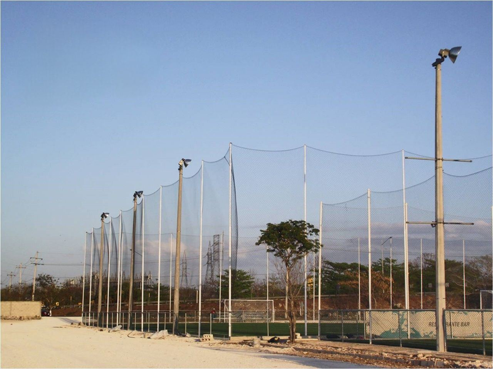
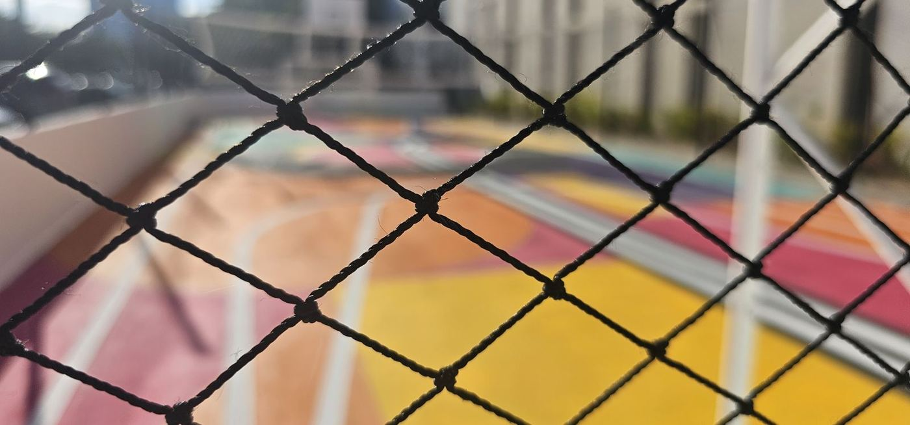
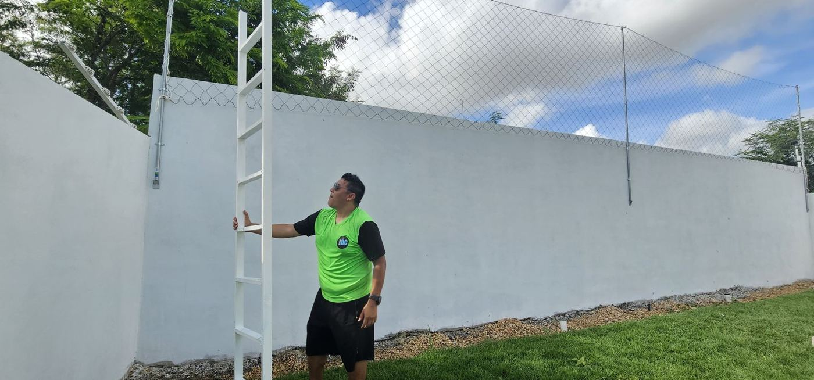

Si buscas una red de contención para cancha de fútbol, lo que necesitas es una red que rodee la cancha y detenga los balones antes de que lleguen a la calle, a las casas vecinas o al estacionamiento. En el mercado le dicen de muchas formas: red perimetral, malla para cancha, red de protección o red de contención. Es la misma red.
Aquí te explico cómo elegirla para que funcione desde el primer partido y te dure años.
Red de contención, red perimetral o malla para cancha: es lo mismo
Cada región y cada vendedor la nombra distinto, pero la función es una sola: contener el balón dentro de la cancha. En Grupo RC la fabricamos como redes perimetrales para canchas de fútbol, de nylon alquitranado negro y a la medida de tu espacio.
No la confundas con la red de la portería ni con la red de voleibol, que son redes de juego. La red de contención va alrededor de la cancha o por encima de ella, como techo de red.
Las tres decisiones que definen tu red
| Decisión | Qué revisar |
|---|---|
| Abertura | Se elige por la pelota más pequeña. Para fútbol, la más pedida es la de 4" (10 cm). Fabricamos de 1", 2", 3" y 4". |
| Altura | Depende de hacia dónde salen los balones: calle, casas, cristales o estacionamiento. Si salen por arriba, conviene evaluar un techo de red. |
| Postes | Recomendamos tubo galvanizado de 2" en adelante, con argollas arriba y abajo, y de 4.5 a 6 m de separación entre postes. |

Si quieres profundizar en la abertura, lee redes de 1, 2, 3 y 4 pulgadas: diferencias y usos.
El material: por qué nylon alquitranado
Una red de contención vive a la intemperie y recibe balonazos todos los días. Nuestras redes son de nylon alquitranado calibre 18, de color negro: el alquitranado protege el hilo del sol y la humedad, y en promedio duran de 8 a 10 años a la intemperie.
Una red más barata de menor calidad puede verse igual en la foto, pero deteriorarse en pocos meses. Al comparar precios, compara también cuánto tiempo vas a tener que volver a comprar.
Sobre barda o desde el piso
Si tu cancha ya tiene una barda, la red de contención puede ir encima para ganar altura sin construir más. Si no hay barda, va de piso a la altura que necesites, sujeta a postes.

Instalación
En Yucatán la instalamos nosotros. Fuera del estado te asesoramos con fotos, videos o videollamada para que la instale tu equipo o tu herrero; en cómo instalar una red perimetral paso a paso está el orden de montaje.
Qué mandarnos para cotizar
- Largo y altura de cada lado que quieres cerrar.
- Si va sobre barda o desde el piso, y la altura de la barda.
- Si los balones también salen por arriba (para evaluar techo de red).
- Qué deportes se juegan y la ciudad de entrega.
La fabricación toma de 5 a 6 días hábiles después del anticipo, y el envío ya va incluido en la cotización.
Preguntas frecuentes
¿Una red de contención es lo mismo que una red perimetral?
Sí. En canchas deportivas se llama red de contención, red perimetral, malla para cancha o red de protección a la misma red: la que rodea la cancha para que los balones no salgan. Lo que cambia de un proyecto a otro es la abertura, la altura y el tipo de postes.
¿Qué abertura necesita una red de contención para fútbol?
Para fútbol la más pedida es la de 4 pulgadas (10 cm). Si en la cancha también se juega con pelotas más pequeñas, se elige una abertura más cerrada, porque la red se escoge por la pelota más pequeña que debe detener.
¿Cuánto dura una red de contención?
Nuestra red de nylon alquitranado dura en promedio de 8 a 10 años a la intemperie. La duración real depende del sol, el salitre, los impactos, el roce y la instalación.
¿Cuánto cuesta una red de contención para cancha?
Se fabrica a la medida y se cotiza por metro cuadrado según la abertura, con el envío incluido a todo México. Mándanos el largo y la altura de cada lado y te damos el precio exacto.